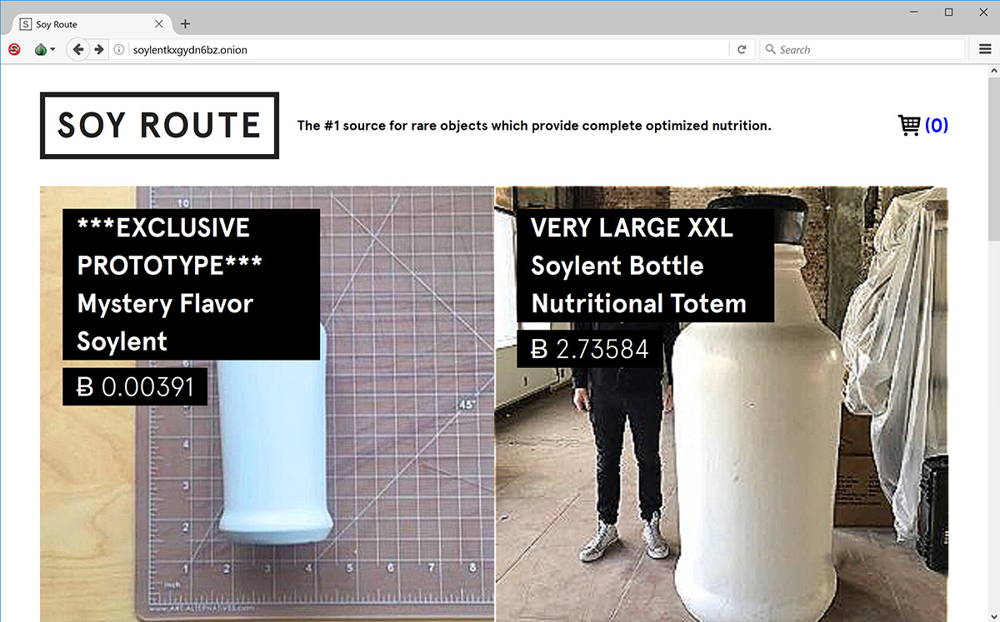

Grant Thomas
is a technologist, and creative.Grant makes things that use technology in unexpected ways to surprise people.
He's an engineering director and creative lead at W+K Lodge.
Selected Work (in reverse chronological order)
Cozmo: Lost In Reddit

H.A.R.L.A.N.D.
Soy Route

Pee World VR

Verizon in Minecraft

Hands on Ron Burgundy

Kobe Counter

Coke Chase